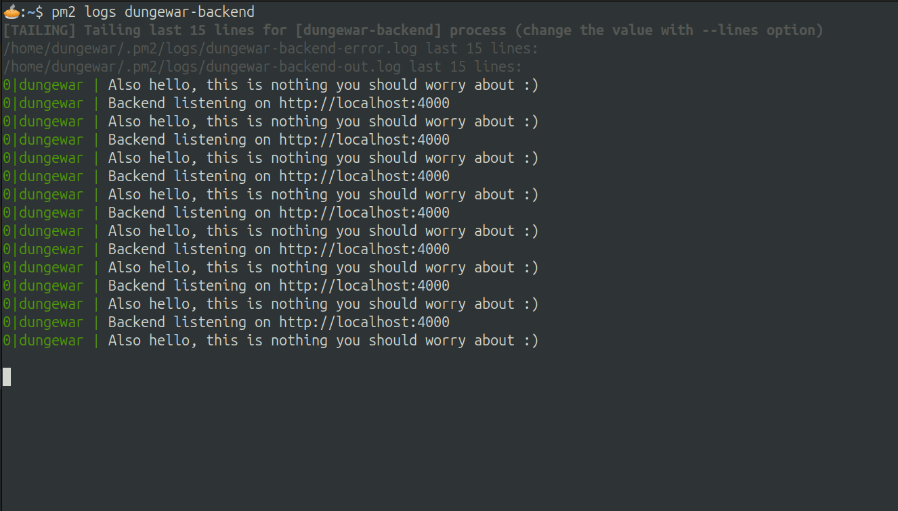
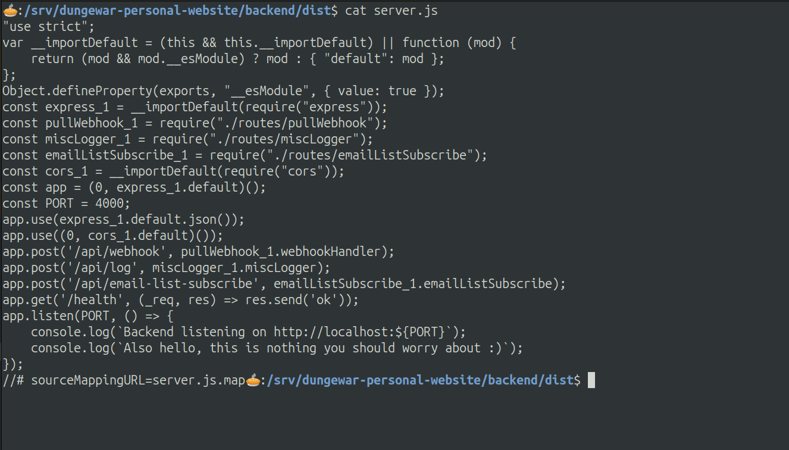
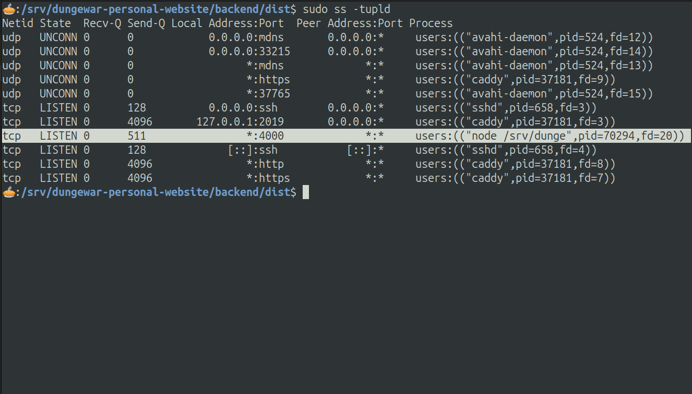
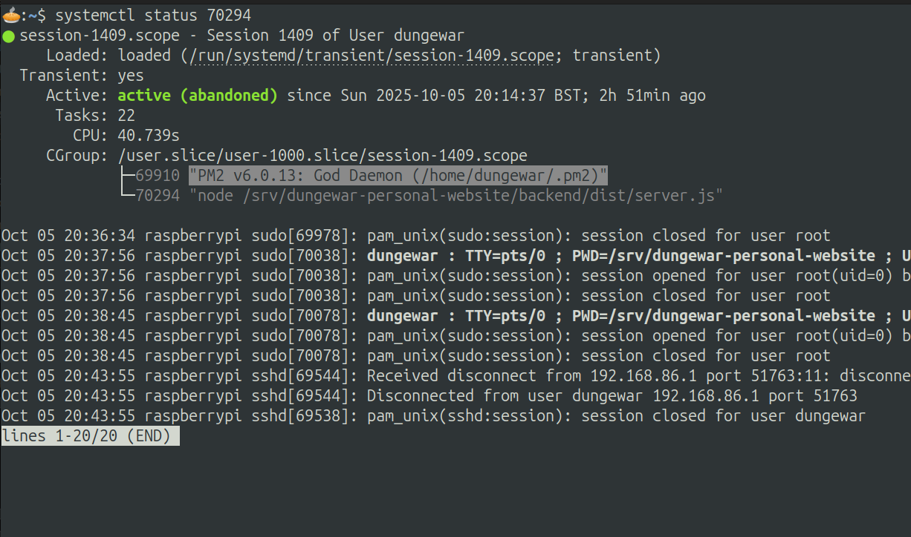
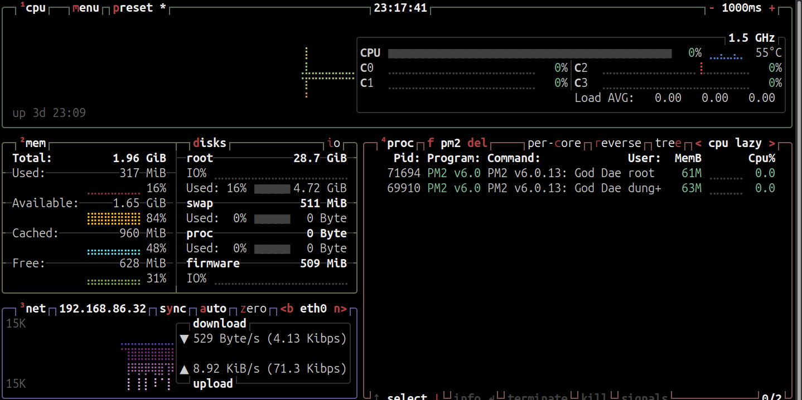
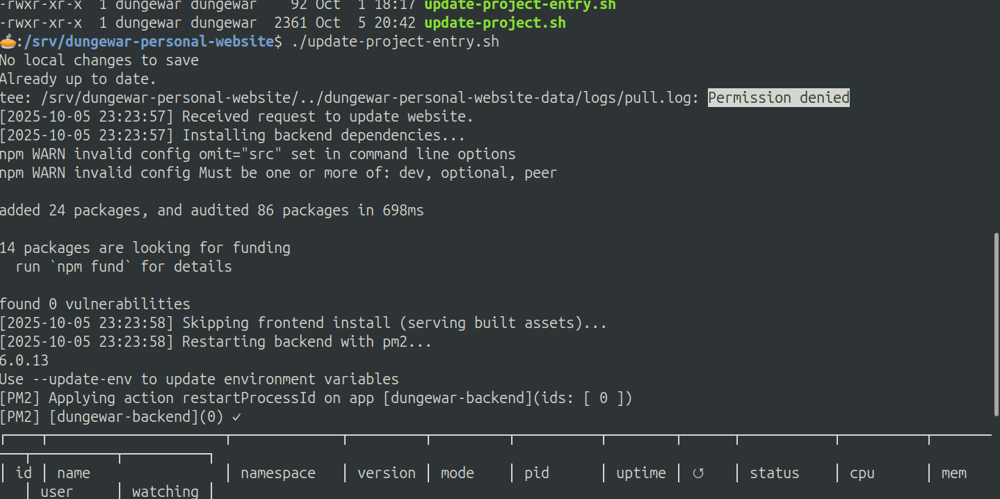
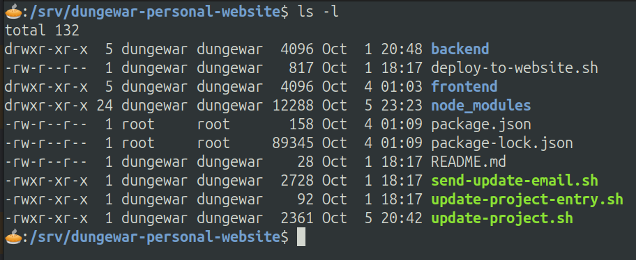
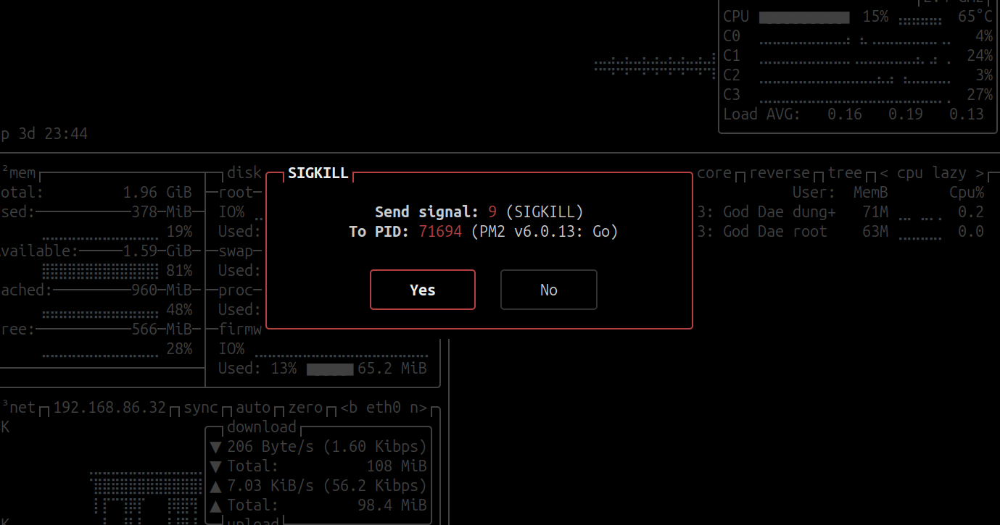

Hello there. I just had a very interesting session of ridding my backend of some nasty daemons, and learned quite a lot on the way, so I'll share it here, hopefully you'll find it to be useful or entertaining or smt.
I was setting up my backend for dungewar.com on my new Raspberry Pi 5 2GB (not sponsored (yet)) when I encountered an oh-so-familiar issue.
The backend process manager I was running, that being PM2, was having a blast restarting my server over and over again. When it happened on my old Raspberry Pi V1.2 B+ 512MB from 2015 ("not" sponsored) it ate 100% of my CPU which is always fun to work in. Normally, programs crash because you did a silly with the code, and it gives an exception or error and then PM2 has to restart it. This time however, pm2 logs showed no errors! It was starting over and over again for no apparent reason.

I went on a goose chase thinking something was killing it but no, it was just exiting cleanly by itself.
My code was very barebones, all it did was listen to port 4000 and then trigger some handlers.

ChatGPT was telling me to do all sorts of crazy debugging with checking individual kernel calls or something, but it was full of crap. Then I came up with a hypothesis: if port 4000 was taken by something else, then my program failed to listen to port 4000, and so not having anything to do, went to sleep like a peaceful baby that I want to shoot.
Sure enough, sudo ss -tupld told me I was right, some
node daemon was eating up port 4000. I needed to kill it.

I had experience hunting daemons before. On my Ubuntu laptop, I've had to kill the CUPS daemon for trying to steal my battery silently, and then the complimentary Avahi daemon that came for revenge. For those who are confused about what they are, here's a quick lesson in daemons:
Daemons are sneaky little boys. They are system processes that run in the background, doing stuff ranging from managing printer queues (CUPS daemon) and finding printers on the local network (Avahi) to managing my server (like the PM2 daemon). They are the backbone of any (good) processing system, without them your computer would only do things in the foreground, suffice to say that would be awful. However, sometimes they grow restless. They start doing evil things, such as failing to find printers over and over again (CUPSd & Avahi daemons) and instead of telling you, they keep on doing it. Even worse, your very own systemd (system daemon (the biggest one of them all (may lord have mercy on us while this one's alive))) can keep on reviving it as the evil daemon is dying to its own unstability.
How am I meant to kill this thing that keeps on reviving itself? It may seem hopeless, but there is a way through.
sudo - the hidden
angelsudo is your hidden power against daemons (sorry Windows
users (it's difficult to do sudo on Windows)). Standing for
'superuser do X', it's a call to the heavens,
for the superuser - that being root (the guy in charge) - to execute any
command you desire, such as executing a daemon. However, simply running
sudo systemctl kill 70294 (70294 being the process ID of
the evil server) did not work, as it keeps on getting revived. The
question now is: who's reviving it? Turns out there's an easy way to
find out.
systemctl status 70294 gave us the culprit. All along,
it was PM2.

You might ask: how have I not noticed this sooner? Well in my
defence, pm2 status gave me nothing, just my backend that
was restarting over and over. This means one of two things:
btop tells me the whole story...

There was another PM2. And it wasn't just any PM2, it was the PM2 God Daemon running not as dungewar, but as root (DUN DUN DUUUUN!).How is this possible? I never ran sudo pm2 to give birth
to this abomination...
at least not explicitly.
When initializing the backend of the website, I have a 2 script combo
update-project.sh and update-project-entry.sh
that updates from github, redownloads node packages, sends out update
emails, and importantly... restarts the backend. The script told me that
some things were not permitted, that it needs root, so I foolishly gave
it.

The likely cause of this is that when first setting it up, I rannpm install as root,
so the package.json and package-lock.json were
owned by root, so my script needed root to access them. 
Within the update-project.sh script, I start PM2.
Because the whole thing being ran as root, it started PM2 as root, and
because of that just checking pm2 status did not show
anything. If I had ran sudo pm2 status it would tell a
different story, the story of the hidden server that was eating up port
4000.
The Final Sol- no I mean the Good Proper At The End Of The Thing
Solution was to unleash sudo upon the root-ran PM2. The thing about root
is that it can do anything, will kill whoever you want it to, even its
own spawn. With the help of my good friend btop (check out
at www.btop.com/dungewar for
98% off your fist purchase over $10! (that is $(10!))).
So I ran sudo btop, went to the PM2 God Daemon ran by
root, and after contemplating over the long hard battle, sent SIGKILL

With SIGTERM, programs have time to accept the signal, shut down
processes cleanly, then exit on their own accord. SIGKILL is not like
that. As soon as the kernel sees the SIGKILL, it starts tearing down the
walls of the root PM2 God Daemon, stoping all its calls, removing its
system memory, and delocating all the taken threads without as much as a
single whisper to it. At the end, nothing remains of it. It's an echo
long gone, and along with it, its child, the
sudo node server.js that was occupying port 4000
disappears.
"Do not weep for daemons, for weeping requires sadness and eventual termination, and for that you need a daemon to keep track of it."